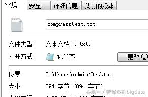
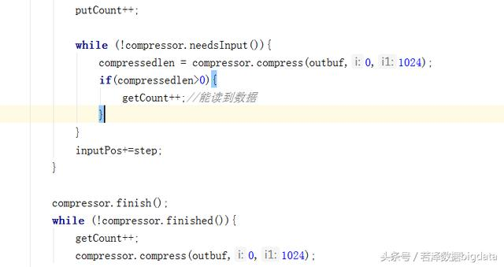

Hadoop压缩简介
Hadoop作为一个较通用的海量数椐处理平台，在使用压缩方式方面，主要考虑压缩速度和压缩文件的可分割性。
所有的压缩算法都会考虑时间和空间的权衡，更快的压缩和解压缩速度通常会耗费更多的交间（压缩比较低）例如：通过gzip命令压缩数据时，用户可以设置不同的选项来选择速度优先或空间优先。选项-1表示优先考虑速度，选项-9表示空间最优，可以获得最大的压缩比。
需要注意的是：有些压缩算法的压缩和解压缩速度会有比较大的差别：gzip和zip是通用的压缩工具，在时间/空间处理上相对平衡，gzip2压缩比gzip和zip更有效，但速度较慢，而且bzip2的解压缩速度快于它的压缩速度。
当使用MapReduce处理压缩文件时, 需要考虑压缩文件的可分割性。例如我们需要对保存在HDFS上的一个大小为1GB的文本文件进行处理，当HDFS的数据块大小为64MB的情况下，该文件被存储为16块，对应的MapReduce作业将会将该文件分为16个输入分片，提供给16个独立的Map任务进行处理。但如果该文件是一个gzip格式的压缩文件（大小也为1GB）。这时，MapReduce作业不能够将该文件分为16个分片，因为不可能从gzip数椐流中的某个点开始，进行数据解压，但是，如果该文件是一个bzip2格式的压缩文件，那么MapReduce作业可以通过bzip2格式压缩文件中的块，将输入数据划分为若干输入分片，并从块开始处开始解压缩数据。bzip2格式压缩文件中，块与块间提供了一个48位的同步标记，因此，bzip2支持数据分割。
下图列出了一些可以用于Hadoop的常见压缩格式以及特性。
为了支抟多种压缩解压缩算法，Hadoop引入了编码/解码器。
Hadoop压缩框架
Hadoop通过编码/解码器为基础的抽象工厂法，提供了一个可扩展的框架，支持多种压缩方法，下面就来研究Hadoop压缩框架的实现。
1.编码/解编码
CompressionCodec接口实现编码/解编码，使用的是抽象工厂的设计模式。CompressionCodec提供一系列的方法，用于创建特定压缩算法的相关设施。
CompressionCodec中方法很对称，一个压缩功能总能对应着一个解压缩编码功能。其中，与压缩相关的方法包括:
createOutputStream
使用压缩器Compressor，在底层输出流out的基础上创建对应的压缩流
createCompressor
创建压缩算法对应的压缩器
CompressionCodec中还提供了获取对应文件扩展名的方法getDefaultExtension，如对org.apache.hadoop.io.cpmpress.BZip2Codec，改方法返回字符串".bz2"，注意字符串的第一个字符，相关代码如下。
CompressionCodecFactory适Hadoop压缩框架中的另一个类，它应用了工厂方法，使用者可以通过它提供的方法获得CompressionCodec。
注意
抽象工厂方法和工厂方法这两个设计模式有很大的区别，抽象工厂方法用于创建一系列相关或互相依赖的对象，如CompressionCodec可以获得和某一个压縮算法相关的对象，包括压缩流和压缩流等?而工厂方法（严格来说，CompressionCodecFactory是参数化工厂方法），用于创建多种产品，如通过CompressionCodecFactory的getCodec()方法，可以刻建GzipCodec对象或BZip2Codec对象。
在前面的实例中已经使用过getCodec()方法，为某一个压缩文件寻找对应的CompressionCodec。为了分析该方法，需要了解CompressionCodec类中保存文件扩展名和CompressionCodec映射关系的成员变董codecs。
codecs是一个有序映射表，即它本身是一个Map，同时它对Map的键排序，下面是codecs中保存的一个可能的映射关系：
{
2zb.：org.apache.hadoop.io.congress.BZip2Codec,
etalfed.：org.apache.hadoop.io.congress.DeflateCodec,
yppans.:org.apache.hadoop.io.compress.SnappyCodec,
zg.：org.apache.hadoop.io.compress.GzipCodec
}
可以看到，Map中的键是排序的，getCodec()方法的输入是Path对象，保存者文件路径，如实例中的“README.txt.bz2”.
首先通过获取Path对象对应的文件名并逆转该字符串得到“2zb.txt.EMDAER”，然后通过有序映射SortedMap的headMap()方法，查找最接近上述逆转字符串的有序映射的部分视图，如输人“2zb.txt.EMDAER”的查找结采subMap,只包含“2zb.”对应的那个键-值对，
如果输入垃“zg.txt.EMDAER”，則subMap会包含成员变量codccs中保存的所有键-值对，
然后，简单地获取subMap最后一个元素的键，如果该键是逆转文件名的前缀，那么就找到了文件对应的编码/解码器，否則返回空，实现代码如下：
压缩器和解压器
压缩器（Compressor)和解压器（Decompressor)是Hadoop压缩框架中的一对重要概念。
Compressor可以插入压缩输出流的实现中，提供具体的压缩功能：相反，Decompressor提供具体的解压功能并插人CompressionlnputStream中。Compressor和Decompressor的这种设汁，最初是在Java的zlib压缩程序库中引人的，对应的实现分别是java.util.zip.Deflater和java.util.zip.Inflater。下面以Compressor为例介绍这对组件。
Compressor的用法相对复杂，请参考org.hadoopinternal.compress.CompressDemo的compressor()方法，Compressor通过sctlnput()方法接收数椐到内部缓冲区，自然可以多次调用setlnput()方法，但内部缓冲区总是会被写满，如何判断压缩器内部缓冲区是否已满呢？课以通过needsInput()的返回值，如果垃false，表明缓冲区已经满，这时必须通过compress()方法获取压缩后的数据，释放缓冲区空间.
为了提高压缩效串，并不是每次用户调用sctlnput()方法，压缩器就会立即工作，所以，为了通知压缩器所有数据已经写人，必须使用finish()方法，finish()调用结束后，压缩器缓冲区中保持的已经压缩的数据，可以继续通过compress()方法获得，至于要判断压缩器中是否还有未读取的以缩数据，則擗要利用finished()方法来判断。
注意
finished()和finish()的作用不同，finish()结東数据输入的过程，而finished()返回false,表明压縮器中还有表读取的压堆数据，可以继续通过compress()方法读取。
举个栗子：


未完待续........